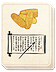

Requires
- Buildings:

- Arts: 
- Resources:

Enables
- Buildings:

Basic Building Statistics (can be modified by difficulty level, arts, skills, traits and retainers)
- Cost: 3400
- +1000 to wealth from commerce in this province
- +20 per turn to town growth from commerce within this province
- Consumes food: 2
- Enables recruitment of Rank 1 metsuke
Clan Effects
- Each market chain building enables you to sustain one additional metsuke (to a maximum of 5)
Description
Wealth may buy comfort, but will it buy peace?
A merchants' guild greatly improves a province's wealth and growth. Rather than competing with each other, a town's merchant class work together, pool their resources and information, and look forward to enlarged profits. They can at last start to plan beyond the next harvest, or for the arrival of the next shipment of trade goods. Associations of merchants were useful for collective risk-taking and collective bargaining. One merchant alone had little chance of getting any concession from his samurai overlords, but an entire town's worth of merchants could present a united, if still respectful, front. Guilds were granted trading rights within a lord's territory, in return for certain considerations. From a lord's point of view, he could influence trade, tax it effectively, take a share of the wealth and still not actually sully his hands in the dirty business of trade. By acting together, the merchants could help finance major trade enterprises when one man alone would have difficulty raising the required working capital.